William Henry Gates III, dit Bill Gates, né le 28 octobre 1955 à Seattle (État de Washington),dans une famille aisée, est un informaticien et entrepreneur américain, pionnier dans le domaine de la micro-informatique.
Travail Principal
Bill Gates découvre l'informatique à la très sélective Lakeside School de Seattle, qui dispose alors d'un PDP-10 loué. Il y réalise avec son ami d'enfance Paul Allen son premier programme informatique : un jeu de tic-tac-toe (morpion).En 1968, âgé de 13 ans, il fonde avec Allen et quelques autres amis le Lakeside Programmers Group. Quelques sociétés recourront à leurs talents, essentiellement pour améliorer des systèmes et des applications existantes écrites en langage assembleur.En 1973, Gates entre à l'université Harvard, à l'âge de 18 ans. Il y rencontre Steve Ballmer, futur CEO de Microsoft. Il abandonne rapidement ses études pour se consacrer uniquement à la programmation informatique.Microsoft a sorti Windows en 1985 et est devenue une société cotée en bourse en 1986. En 1987, Bill Gates était un milliardaire à l’âge de 31 ans.
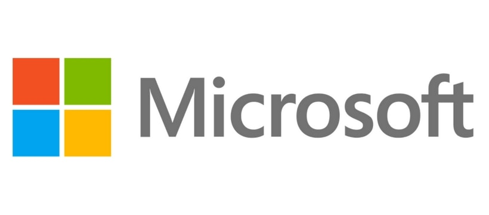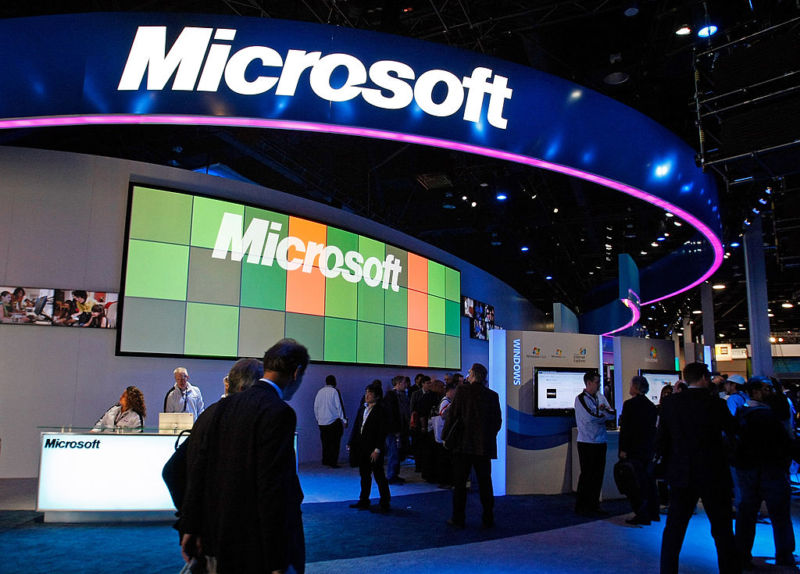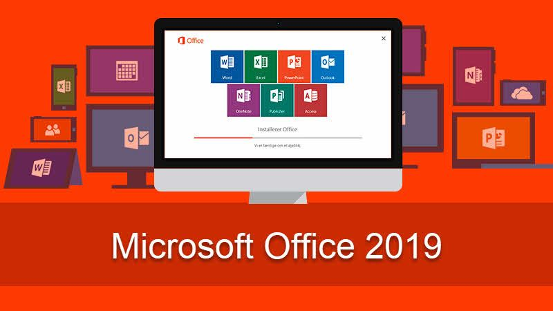Inventions
Microsoft fait évoluer au rythme effréné des micro-ordinateurs son système d'exploitation et sa gamme de logiciels bureautiques Microsoft Office, traitement de texte, tableur, base de données, utilitaires, jeux, etc. En 1985, Windows est alors, et pour 10 ans encore, une simple interface graphique, le système d'exploitation restant MS-DOS. Le succès met très longtemps à venir pour les premières versions de Windows, l'interface étant graphiquement très peu aboutie et d'une utilisation loin d'être intuitive7. Windows est cependant déjà devenu le système d'exploitation le plus vendu au monde et fait la fortune de Microsoft et de ses actionnaires, avec une emprise sur le marché mondial gravitant autour de 90 %, au point de lui coûter un procès pour monopole et une grave menace de dissolution de son entreprise dans les années 2000.
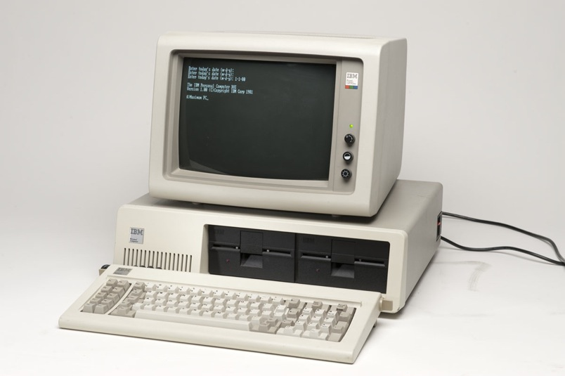 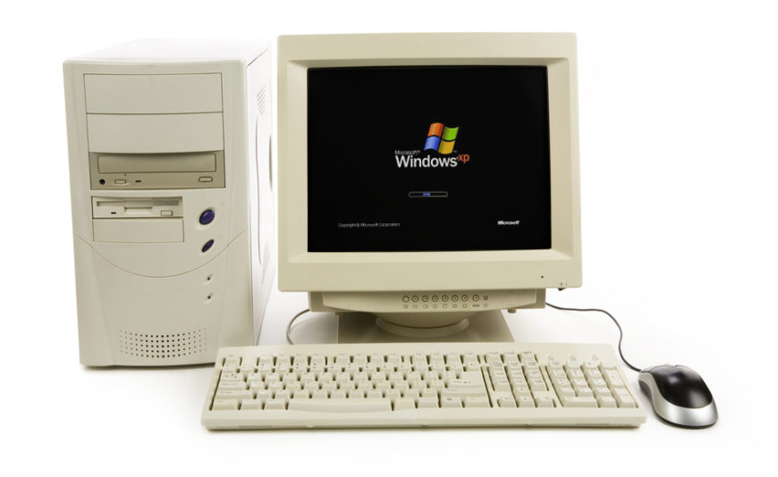 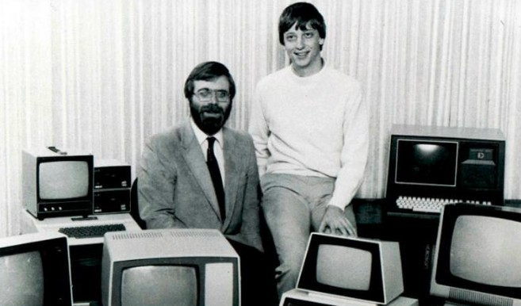
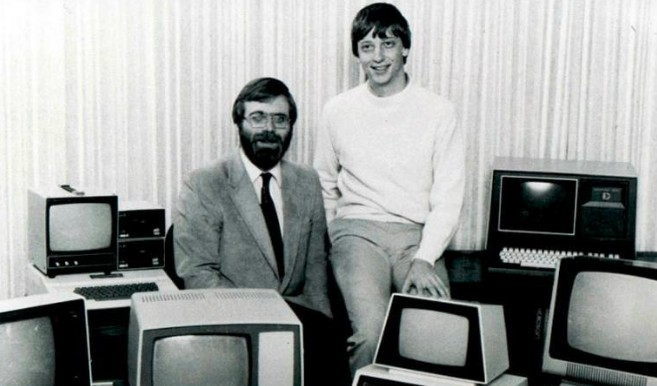
Vie privée
Le 1er janvier 1994, il épouse Melinda French, responsable du marketing de Microsoft, avec laquelle il aura deux filles, prénommées Jennifer Katharine (née en 1996) et Phœbe Adele (née en 2002), et un garçon, Rory John (né en 1999). Il emménage avec sa famille au bord du lac Washington, près de Seattle, dans une maison estimée à 113 millions de dollars
En 2000, il crée la Fondation Bill-et-Melinda-Gates, qui a pour objectif d'apporter à la population mondiale des innovations en matière de santé et d’acquisition de connaissances. Elle dispose de quelque 102,8 milliards de dollars.La Fondation Gates a déjà dépensé 25,26 milliards de dollars13, en particulier pour vacciner 55 millions d'enfants. Bill Gates a également annoncé vouloir léguer 95 % de sa fortune à sa fondation.Ces actions ont contribué à ce que le magazine Time désigne Bill Gates « Homme de l'année 2005 », aux côtés de son épouse Melinda et de Bono (le chanteur du groupe U2), pour leurs actions sur le front philanthropique. .
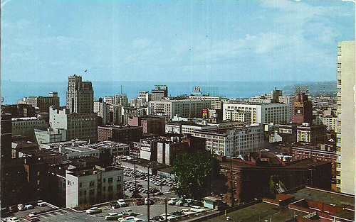 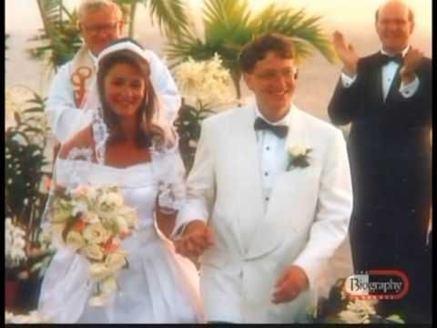
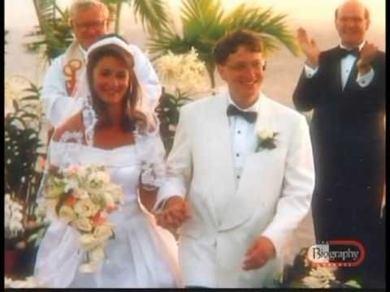
La Fondation Gates
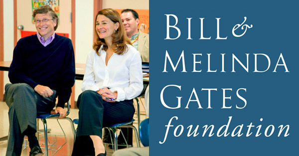En 2000, il crée la Fondation Bill-et-Melinda-Gates, qui a pour objectif d'apporter à la population mondiale des innovations en matière de santé et d’acquisition de connaissances. Elle dispose de quelque 102,8 milliards de dollars.La Fondation Gates a déjà dépensé 25,26 milliards de dollars13, en particulier pour vacciner 55 millions d'enfants. Bill Gates a également annoncé vouloir léguer 95 % de sa fortune à sa fondation.Ces actions ont contribué à ce que le magazine Time désigne Bill Gates « Homme de l'année 2005 », aux côtés de son épouse Melinda et de Bono (le chanteur du groupe U2), pour leurs actions sur le front philanthropique.
En 2010, Bill et Melinda ont fait équipe avec Warren Buffett pour démarrer une campagne intitulée “The Giving Pledge", qui a encouragé d'autres milliardaires à faire don d'au moins la moitié de leur fortune à la philanthropie. Paul Allen, Larry Ellison, Steve Case, et Mark Zuckerberg sont parmi ceux qui ont signé l'engagement à ce jour.La Fondation Bill & Melinda Gates participe dans un certain nombre de projets, comme l'éradication des maladies dans les coins reculés du monde, et le développement des sources les plus riches de la nourriture pour les personnes démunies.
Bill Gates - Citations
"J'ai un ami qui a réussi tous ses examens. Moi j'ai échoué à tous. Lui est ingénieur chez Microsoft. Moi je suis le fondateur."
"Ce n'est pas votre faute si vous êtes né pauvre. En revanche, si vous mourrez pauvre, c'est votre erreur."
"Si vous ne pouvez pas le faire bien, rendez-le beau."
"Pour gagner gros, il faut parfois prendre de gros risques."
"Si c'est suffisamment important pour vous, vous trouverez un chemin."
"Célébrer le succès, c’est bien, mais il est plus important de tirer les leçons de l’échec."
"Si vous pensez que votre formateur est dur avec vous, attendez d’avoir un patron."
"Nous avons tous besoin de gens pour nous donner leur opinion. C’est comme ça que l’on s’améliore."
"Les gens ont toujours peur du changement. Ils avaient même peur de l’électricité quand elle a été inventée."
"Montrez aux gens les problèmes, puis montrez-leur les solutions : ils seront incités à agir."
"Le succès est un enseignant moche. Il séduit les gens intelligents à croire qu'ils ne peuvent pas perdre."
"La patience est un élément clé de la réussite."